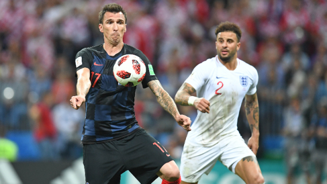
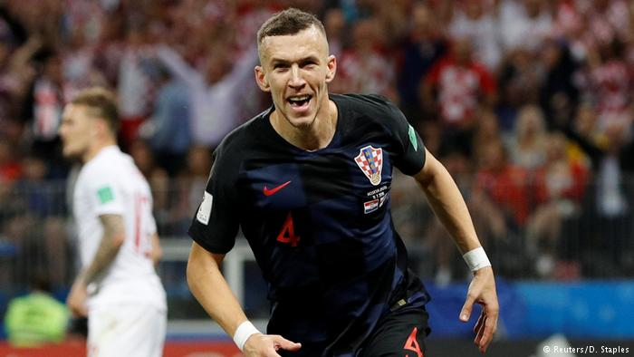
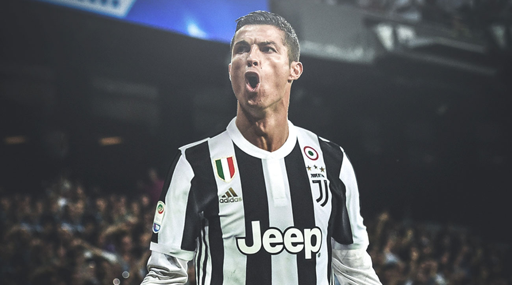
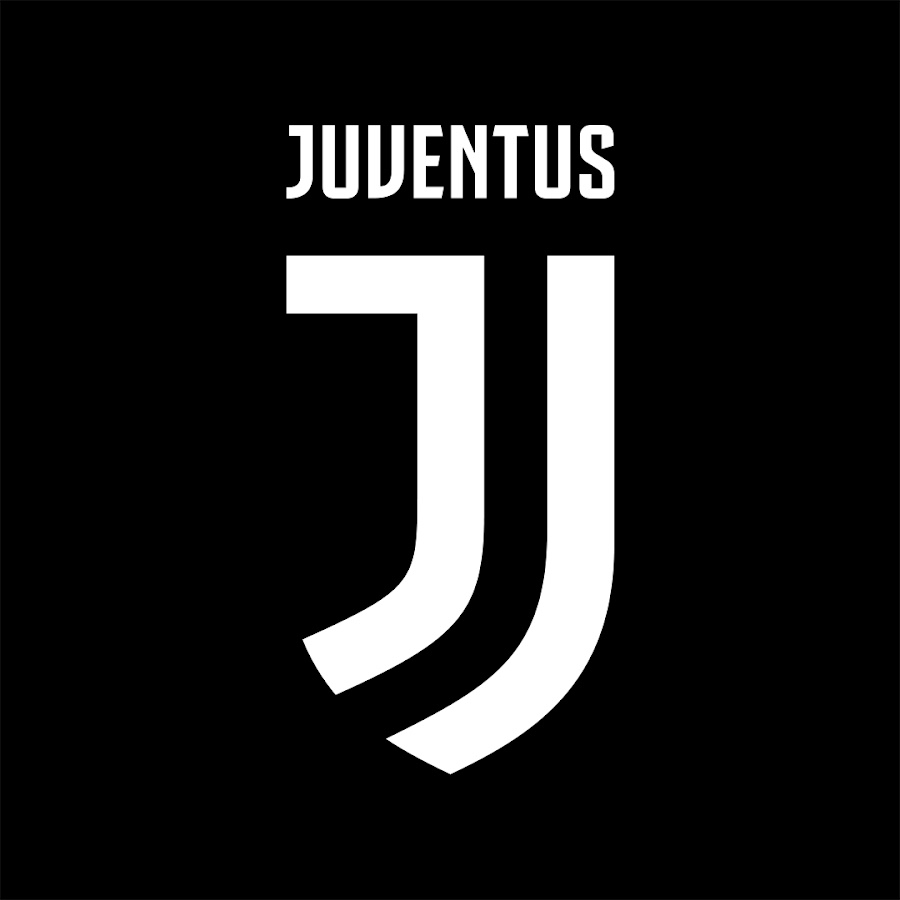
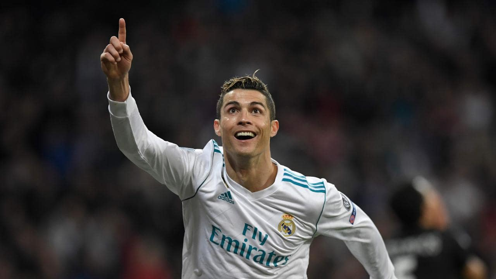
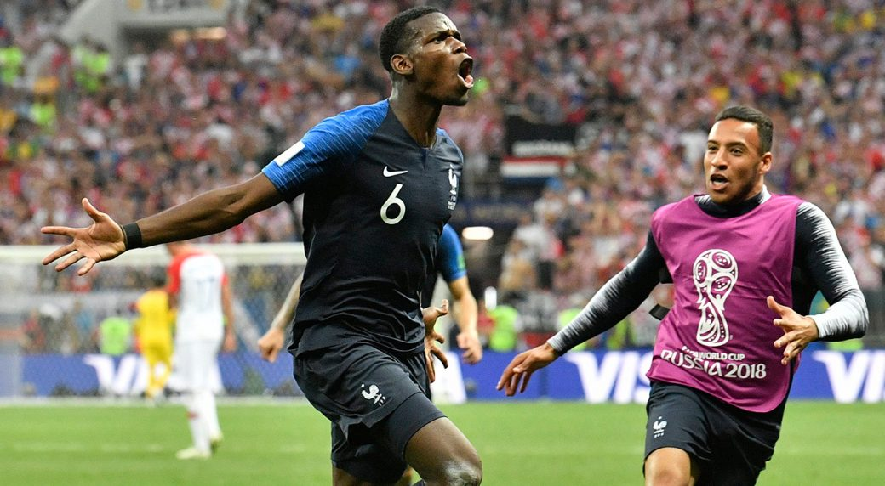
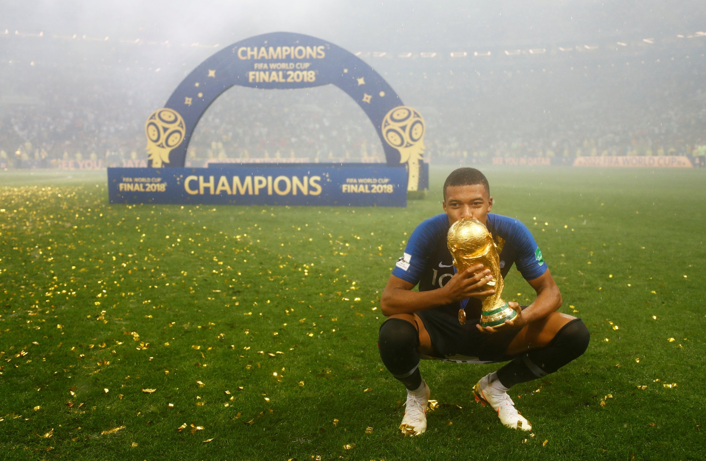

Created at Phillips Academy
France and Belgium faced off in the first game of the World Cup Semifinals and France were the victors, winning 1-0. Samuel Umtiti, the FC Barcelona defender, headed home the winning goal for Les Bleus early in the second half. Belgium, led by Eden Hazard and Romelu Lukaku, couldn’t find the back of the net and will be disappointed to not deliver a first World Cup Final to their home nation. France, on the 20 year anniversary of their 1998 World Cup Title, will advance to play Croatia on Sunday for a chanceat world domination. Les Bleus are looking strong headed into their final match and are hoping for the likes of Antoine Griezmann and Kylian Mbappe to lead them to victory. On the other hand, Belgium will have to settle for the 3rd place match against England on Saturday. Here in Andover, a crowd gathered to watch the match in Paresky Commons. Many French fans were in attendanceand were delighted to see their nation win.
 In an intense battle between 2 teams that weren’t supposed to make the Semifinal, Croatia prevailed 2-1 over England. England got the scoring started early, in the 5th minute, off of a beautiful free kick from Right Back Kieran Trippier. The early goal had British fans thinking it really was coming home. However, the second half belonged to Croatia and Ivan Perisic netted a goal in the 68th minute to even the score 1-1. Neither team could catch a breakthrough in the rest of regular time and the match went into extra time. Mario Mandzukic became a hero in the 109th minute with his winning goal. England’s title hopes were left in the dust and they will have to settle for the 3rd place match against Belgium. Croatia did a great job of stopping Harry Kane and will look forward to attempting to stop France’s potent attack. Perisic, the Inter Milan midfielder, took home Man of the Match honors in the monumental win for Croatia. This will be Croatia’s first ever World Cup Final and it willhappen on Sunday at 2pm on Fox.
  Cristiano Ronaldo has shocked the world by leaving Real Madrid for Italian side Juventus. Juve has bought CR7 for a 105 million euro transfer fee. Realfans from around the world are sad to see this legend leave the club and no replacement has been found to date. It is hard to replace a great player likeCR7 but they must certainly try. It is rumored that Madrid has put in a bid for Chelsea winger Eden Hazard. On Juventus’ side, they have been ostentaciously putting together a side that will be expected to capture the Champions League Title. Juve’s other signings include RM Douglas Costa and RB Joao Cancelo. They have also signed CM Emre Can from Liverpool on a free transfer. Thanks to this splash of cash on Ronaldo, Juve will need to sell possibly a few players in order to stay on the good side of Fifa’s Financial Fair Play rules. Striker Gonzalo Higuain is expected to be sold to Prem side Chelsea for upwards of 60 million and Alex Sandro is rumored to leave as well. Despite the need to sell a few players, the Turin based club is reportedly chasing the transfer of Real Madrid LB Marcelo as well. Despite these claims, it will be a serious coup if they can pull this off and double dip into Madrid’s starting 11. That move could however make sense for Real as they would get younger and could build for the next generation.
 In a widely anticipated World Cup Final in Russia, France prevailed over Croatia 4-2 in an intense match. Mario Mandzukic scored an own goal in the 18’ minute to give France a 1-0 lead but Ivan Perisic soon pulled one back for the Croats. 10 minutes later, Antoine Griezmann scored a penalty kick after a hotly contested hand ball for a 2-1 French lead. After halftime, France scored two goals in quick succession thanks to Paul Pogba and Kylian Mbappe to make the scoreline 4-1. Croatia was forced to go into an all out attack and that did yield a goal after a Karius-esque mistake from French keeper Hugo Lloris. France then held on for the win and the european nation had their second ever World Cup win in the bag.